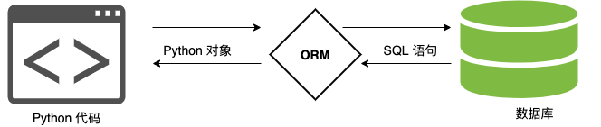
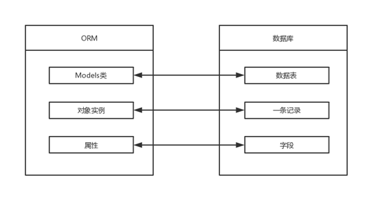
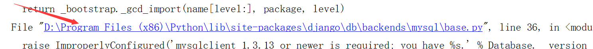
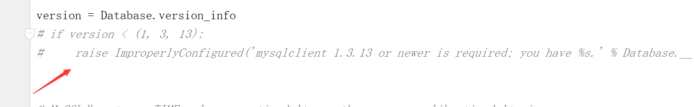
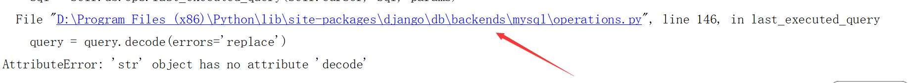
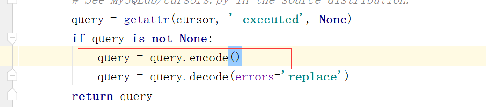
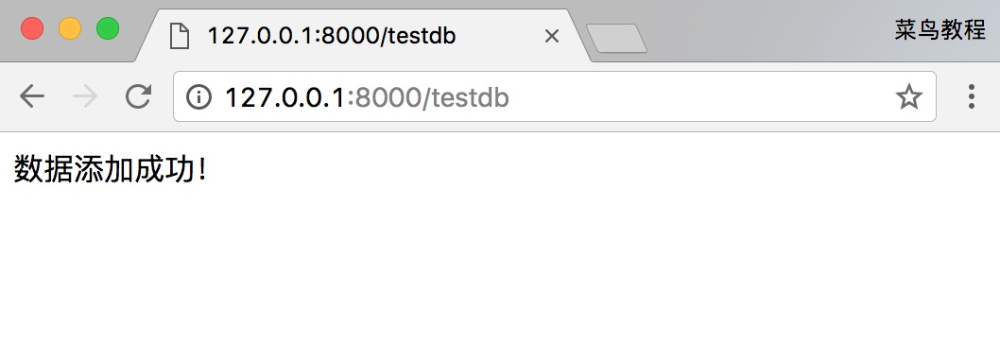

Django models
Django provides excellent support for various databases, including: PostgreSQL, MySQL, SQLite, Oracle.
Django provides a unified calling API for these databases. We can choose different databases according to our business needs.
MySQL is the most commonly used database in web applications. In this chapter, we will use MySQL as an example for demonstration. You can use this site'sMySQL TutorialLearn more about the basics of MySQL.
If you haven't installed the mysql driver, you can run the following command to install it:
sudo pip3 install pymysql
Django ORM
Django models use the built-in ORM.
Object Relational Mapping (ORM for short) is used to implement conversion between data of different types of systems in object-oriented programming languages.
ORM acts as a bridge between the business logic layer and the database layer.
ORM automatically persists objects in a program to the database by using metadata that describes the mapping between objects and the database.

Benefits of using ORM:
- Improve development efficiency.
- Different databases can be switched smoothly.
Disadvantages of using ORM:
- When ORM code is converted into SQL statements, it takes a certain amount of time, and execution efficiency will be reduced.
- Writing ORM code for a long time will reduce the ability to write SQL statements.
ORM parsing process:
- 1. ORM converts Python code into SQL statements.
- 2. The SQL statement is transmitted to the database server through pymysql.
- 3. Execute the SQL statement in the database and return the result.
ORM mapping table:

Database configuration
How Django uses the MySQL database
Syntax for creating a MySQL database (ORM cannot operate at the database level, it can only operate on data tables):
create database 数据库名称 default charset=utf8; # 防止编码问题，指定为 utf8
For example, we create a database named runoob, and specify the encoding as utf8:
create database runoob default charset=utf8;
In the project's settings.py file, find the DATABASES configuration item and modify its information to:
HelloWorld/HelloWorld/settings.py: file code:
If you are using Python2.x, Chinese comments are added here, so you need to add the following at the beginning of the HelloWorld/settings.py file:# -*- coding: UTF-8 -*-。
The above contains the database name and user information, which are the same as the corresponding database and user settings in MySQL. Django connects to the corresponding database and user in MySQL according to this setting.
Next, tell Django to use the pymysql module to connect to the mysql database:
Example
import pymysql
pymysql.install_as_MySQLdb()
Define Model
Create App
Django stipulates that if you want to use models, you must create an app. We use the following command to create an app called TestModel:
django-admin startapp TestModel
The directory structure is as follows:
HelloWorld |-- HelloWorld |-- manage.py ... |-- TestModel | |-- __init__.py | |-- admin.py | |-- models.py | |-- tests.py | `-- views.py
We modify the TestModel/models.py file, the code is as follows:
HelloWorld/TestModel/models.py: File code:
The above class name represents the database table name, and it inherits models.Model. The fields inside the class represent the fields (name) in the data table, and the data types are determined by CharField (equivalent to varchar), DateField (equivalent to datetime). The max_length parameter limits the length.
Next, find the INSTALLED_APPS entry in settings.py, as follows:
INSTALLED_APPS = (
'django.contrib.admin',
'django.contrib.auth',
'django.contrib.contenttypes',
'django.contrib.sessions',
'django.contrib.messages',
'django.contrib.staticfiles',
'TestModel', # 添加此项
)
Run in the command line:
$ python3 manage.py migrate # 创建表结构 $ python3 manage.py makemigrations TestModel # 让 Django 知道我们在我们的模型有一些变更 $ python3 manage.py migrate TestModel # 创建表结构
When you see the words "Creating table..." on a few lines, your data table has been created.
Creating tables ... …… Creating table TestModel_test #我们自定义的表 ……
The table name structure is: application name_class name (e.g., TestModel_test).
Note:Although we did not set a primary key for the table in models, Django will automatically add an id as the primary key.
Common error messages
If the following error message appears when executing the above command:

The reason is that MySQLclient currently only supports Python 3.4, so if you are using a higher version of Python, you need to modify as follows:
Through the file path in the error message, find the base.py file in the path ...site-packages\Django-2.0-py3.6.egg\django\db\backends\mysql, and comment out these two lines of code (the code is at the beginning of the file):
if version < (1, 3, 13):
raise ImproperlyConfigured('mysqlclient 1.3.13 or newer is required; you have %s.' % Database.__version__)

Generally, click the code file path information in the error, and it will automatically jump to the line number in the error file. At this point, we comment out the code line that reported the error.
If the following error message appears:

We click the code file path of the error, jump to the line number in the error file, and at this point we add the following before the error code line:
query = query.encode()

Database operation
Next, we add the testdb.py file (described below) in the HelloWorld directory, and modify urls.py:
HelloWorld/HelloWorld/urls.py: File code:
Add Data
To add data, you need to create an object first, and then execute the save function, which is equivalent to INSERT in SQL:
HelloWorld/HelloWorld/testdb.py: file code:
Visithttp://127.0.0.1:8000/testdbThen you can see a prompt indicating that the data was added successfully.
The output result is as follows:

Get Data
Django provides multiple ways to retrieve database content, as shown in the following code:
HelloWorld/HelloWorld/testdb.py: file code:
Update Data
To modify data, you can use save() or update():
HelloWorld/HelloWorld/testdb.py: file code:
Delete data
To delete an object in the database, you only need to call the delete() method of that object: